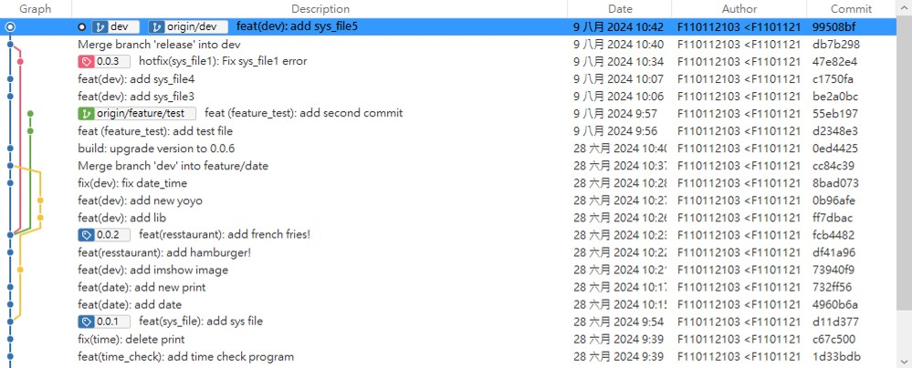
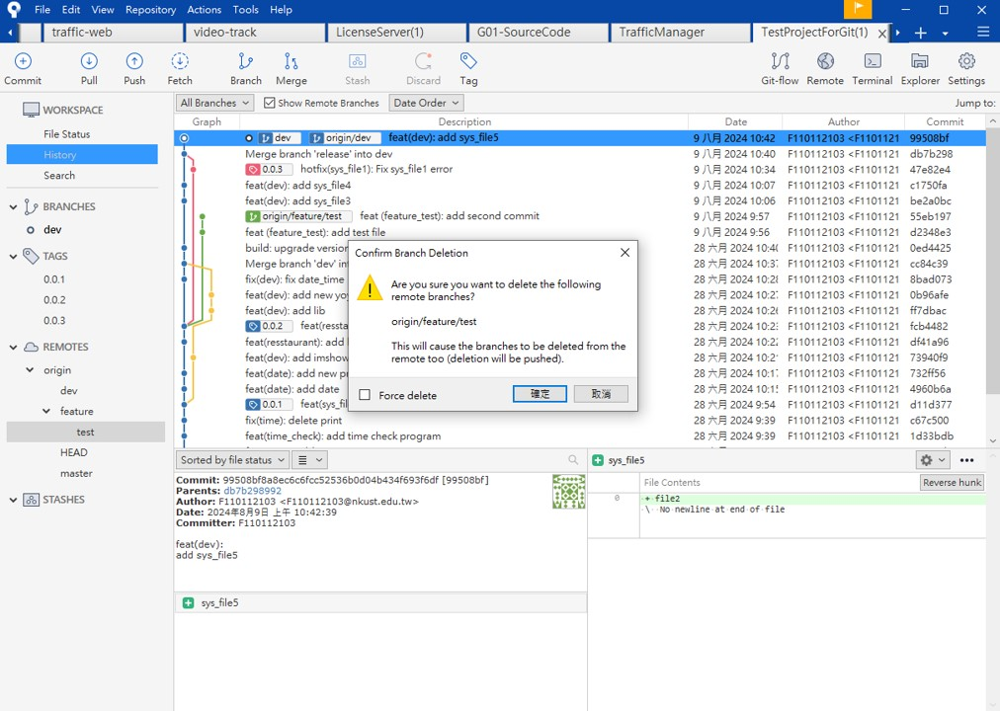
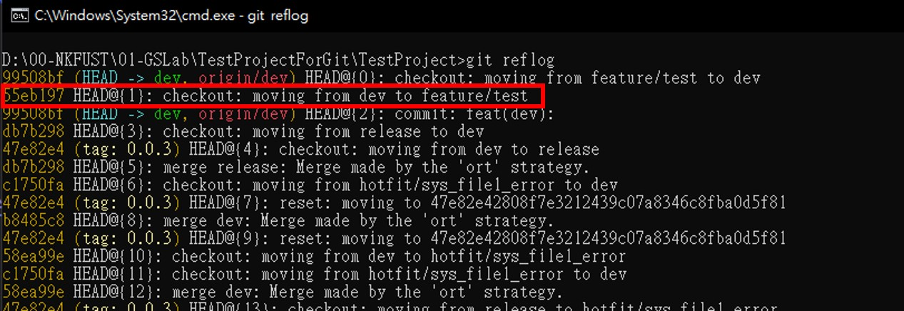

Git Flow - 延伸操作1. 誤刪分支
延伸操作1. 誤刪分支
情境1. 誤刪孤立分支
假設我們正在開發或是曾經有開發一支分支: feature/test，但一個不小心，刪除了Remote上的分支
基本上你在操作任何刪除動作，SourceTree都會跳出警告訊息

OK! 不小心刪除了，原本只是想整理分支，沒想到連同歷史的commit都被刪除了!!
Hint
在 Git 中，若分支上的 Commit 沒有被合併到其他分支且該分支被刪除，那麼這些 commit 將會變得「孤立」（orphaned），在一段時間後可能被 Git 的垃圾回收機制（git gc）永久刪除。 反之，如果分支上的 commit 已經被合併到其他分支（如 develop），即使刪除該分支，這些 commit 仍然會保留在合併的分支中，因為 Git 的歷史會完整地保留這些已合併的改動。
by ChatGPT
解決方法
到該專案目錄下以Command執行
git reflog
找到你剛剛刪除的操作
3. 輸入以下指令回復分支 .. code-block:: bash
git checkout -b feature/test <commit hash>
已復原。但記得，此時的分支是在你的本地端，記得再push到remote